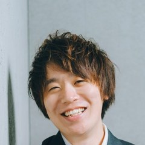
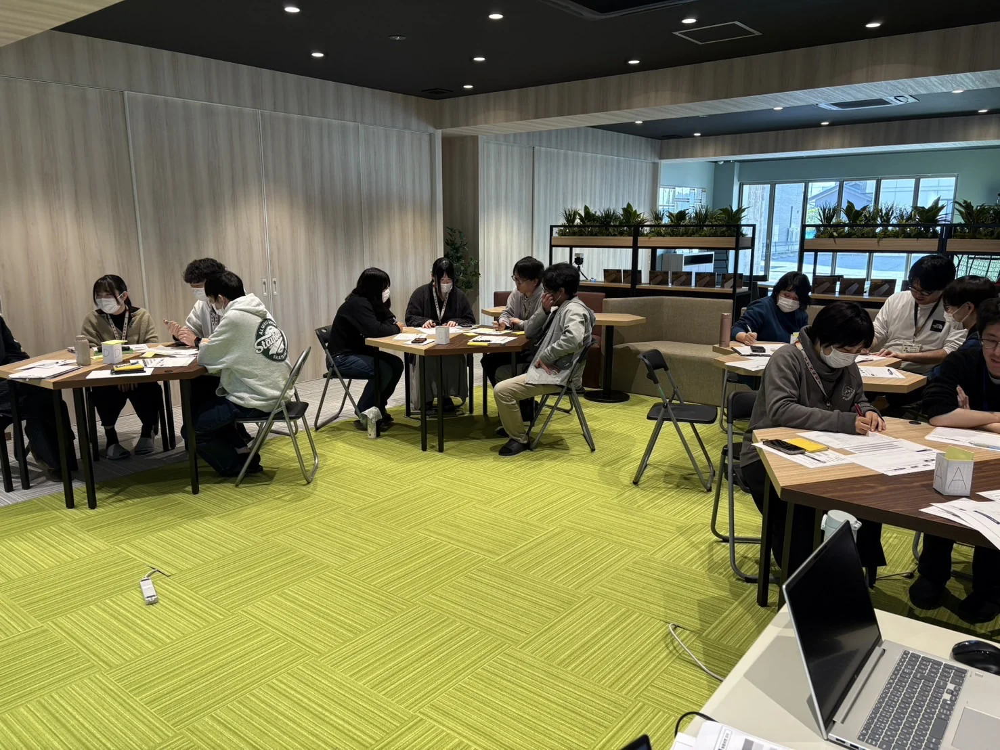
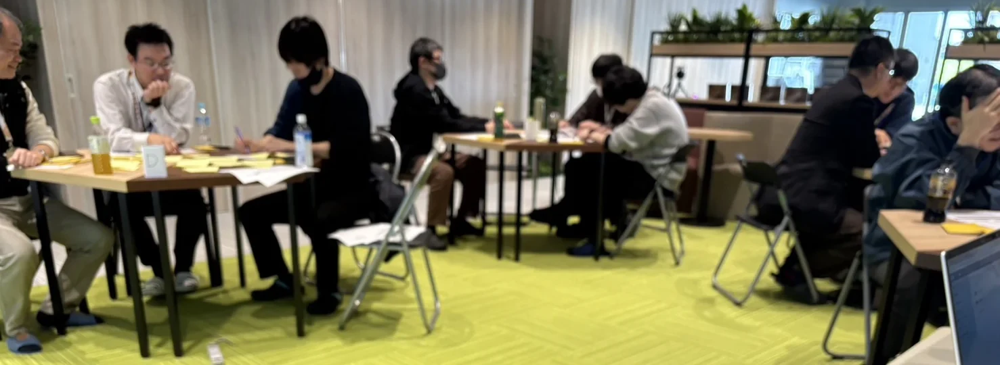
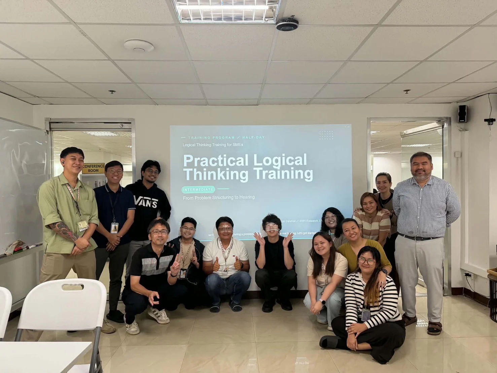
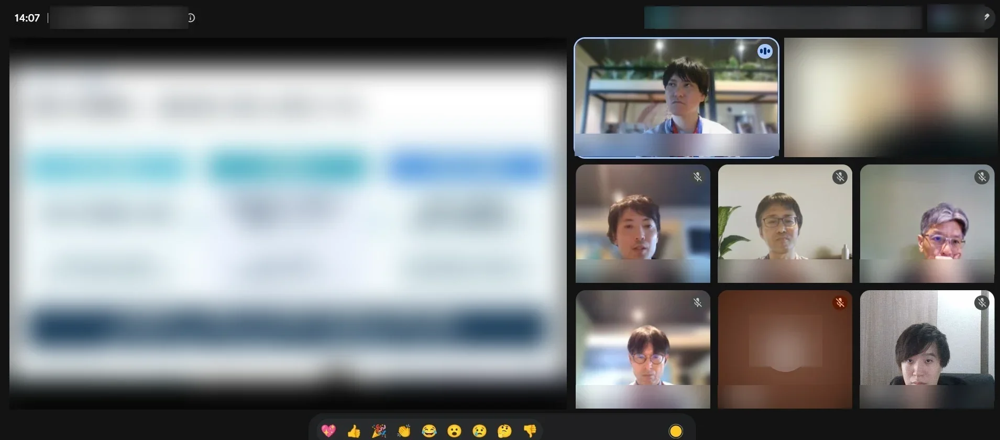

開発力に、課題を見つけて提案する力を。天晴データネットが会社の方針として進める、段階的なロジカルシンキング研修
天晴データネットは、受託開発で培った開発力に、お客様の課題を見つけて提案する力を掛け合わせる方向へ進んでいます。その土台として、ロジカルシンキングを全社員から管理職まで、段階的な研修で磨いてきました。2026年の春に初級、初夏から夏に中級、秋に上級の本提案と、日本とフィリピンで続けています。
- 課題
- 開発力に、お客様の潜在的な課題を見つけて提案する力を掛け合わせる。その土台になる考え方の型を、全社員で持つ必要があった。
- やったこと
- 全社員向けの初級、中級、管理職の上級と、3段階の研修を設計し、日本とフィリピンで行った。
- 変わったこと
- 初級の直後、回答96件のうち91件が「考え方を理解できた」と答えた。上級では、管理職のチームが協力いただいた実在の企業の社長へ提案した。
体制

静木 銀蔵BWH総合研究所 代表
研修の設計と講師- 足羽 サクラAI社員
組織・人事 - 一乗谷 アヤAI社員
研修

はじめに
With AI の時代に、なぜロジカルシンキングか
生成AIの進展で、IT業界の技術革新は速くなり、スキルが古くなる速さも増しています。福井大学大学院の研究（2026年）は、福井県内に本社を置く企業などの経営者とエンジニアへのインタビューから、この変化を整理しています。かつて業界で言われた「ITエンジニア30歳賞味期限説」の「賞味期限」は、いまは年齢ではなく、技術革新に伴うスキルの陳腐化を指すようになった、というのがその見立てです。
同じ研究によると、経営側がエンジニアに求める価値は、コードを書く力から、顧客の課題を抽出して解決策を提案する力へ移っています。単純なコーディングは AI が担うようになり、顧客自身が気づいていない課題を認識し、ソリューションを提案できる力が欠かせなくなった、とも書かれています。
天晴データネットの西川孝盛社長は、この研究のインタビューで「30歳賞味期限説」の合理性を問われ、次のように答えています。
合理性はない。50代や60代からでも、AI等のツールを的確に使いこなし、経験に基づく課題発見力を掛け合わせれば無敵になれる
天晴データネットの会社の方針も、開発力に、課題を見つけて提案する力を掛け合わせる向きです。その基礎としてBWHが研修の中心に置いたのが、ロジカルシンキングでした。
経緯
方針の土台に、ロジカルシンキングを置いた
BWHの支援は、3本の柱で始まりました。組織サーベイの見直し、人事評価の見直し、そして天晴データネット独自の人材研修の開発と実施です。優先順位を話し合い、まず研修から手をつけています。
研修を始める前に、BWHは社長・役員の方々と、研修のねらいを整理しました。事業は受託開発中心から、DXコンサル中心へ。人材は、顧客から明示された要望に忠実なソリューションを開発できる人から、顧客の潜在課題を分析し、独自のソリューションを提案・実行できる人へ。その思考力と提案力の基礎になるのが、ロジカルシンキングです。
研修の前の社内アンケートでは、うまく考えられるようになりたい場面を複数回答で聞いています。選択肢の中で最も多かったのは「説明する場面」で、82件中51件（62.2%）でした。
やったこと
初級・中級・上級で、お題を本物に近づけた
- 初級｜2026年春日本の全社員型を学ぶお題：福井の映画館
- 中級｜初夏・夏福井・東京／マニラ型を学ぶ架空の企業の要望を聞き、ヒアリングシートにまとめる（日本の回は役員がお客様役）
- 上級｜夏〜秋管理職（日本とフィリピンの混成2チーム）実在企業で型を使う協力いただいた実在の企業の社長へ提案
初級（2026年春）：全社員で、同じ型を同じ土台から
初級は日本の全社員を対象に、2日間で計7回行いました。班は階層別にせず、一般職から役員までが混ざる形にしました。同じ内容を同じ土台で学んでおけば、研修のあとも部門や階層を超えて話が通じやすくなるからです。
ロジカルシンキングを、情報を整理して構造にする段（MECE とロジックツリー）と、案を選ぶ段（スコアリング）の2つに分けて学びました。MECE は漏れなく重なりなく整理する考え方、スコアリングは評価の軸と重みを決めて案を比べる方法です。説明を聞いたらすぐ演習で使う流れを繰り返し、福井の映画館を舞台にしたお題で、ロジックツリーで案を出し、スコアリングで1つを選びました。

フィリピンの拠点の初級は、西川社長が行いました。
中級（初夏・日本）：顧客の言葉を整理し、聞く
中級は初夏に、福井と東京で行いました。受け身の開発から、整理・提案できる会社へ向かう第一歩として、「整理し・聞く力」を身につける回です。
架空の企業を相手に、役員の方がお客様役になり、受講者が話を聞いてヒアリングシートにまとめました。提案そのものは、上級で扱います。育てたい力は、課題整理力、仮説構築力、ヒアリング力、ロジカルコミュニケーションの4つです。
中級（夏・フィリピン）：英語版で、同じ型を
夏には、フィリピンの拠点向けの英語版をマニラで行いました。説明はAI音声と英語字幕で進め、3つのチームがグループワークに取り組みました。
あとのアンケート（回答8件）には、As-Is と To-Be を自分の仕事で使う、という声がありました（英語の原文と、BWHの訳）。
"One thing I can use in my own work is the As-is / To-be approach. I can clearly describe the current situation, define what I want the future state to look like, and then articulate the gap between them before deciding on a solution."
（訳）自分の仕事で使えるのは As-is／To-be の考え方です。今の状況をはっきり書き、目指す姿を決め、解決策を決める前に、その間のギャップを言葉にできます。
一方で、題材が営業寄りで、部門を問わず使える題材にしてほしい、という声もありました。

上級（夏〜秋）：管理職が、実在の企業に提案する
上級の受講者は管理職です。日本とフィリピンのメンバーが混ざった2チームが、協力いただいた実在の企業に顧客役を引き受けてもらい、その会社の本物の課題に向けて提案をつくりました。
夏に先方へのヒアリングから始め、提案づくりとプレゼンの練習を重ねて、秋に先方の社長へ提案しました。

変わったこと
理解は届き、使い続けるのはこれから
上級の提案を終えて、研修のご担当の舟田伸也様（システム本部 副本部長）から、次のお言葉をいただきました。
初級・中級・上級を通じて、課題整理力・提案力・プレゼンテーション力の習得を目指してきましたが、今回のプレゼンを通じて、私も一定の成果が見られたと感じています。
受講者の反応も見ていきます。初級の直後は、回答96件のうち91件（94.8%）が「考え方を理解できた」に、89件（92.7%）が「今後の業務で活用したい」に、「非常にそう思う」か「ややそう思う」と答えました。約1か月後にもう一度聞くと、回答80件のうち、業務で実際に使ったのは28件（35.0%）、「まだ使う機会はなかった」は40件（50.0%）でした。
受講者の自由記述には、次のような声がありました（表記は原文のまま）。初級の直後の声です。
顧客やベンダとの会話のなかでなぜこの案がいいのか説明できないことが多かった。ロジカルシンキングの手法を用いて業務に活かしていきたい。
今まではMECEの考えが足りてないと気づいた。観点の漏れや重複をなくすことで、うまくいきそうな気がします
（前略）スコアリングの考え方を初めて知りました。数値で表すことで明確な基準になる点がとても有効だと感じたため、今後の業務で活かせる点を見つけたいなと思います。
ロジックツリーは業務内のタスクの整理などに活用できたと思います。
約1か月後には、使った人が具体的な場面を書いています。
委員会施策について活用。以前はなんとなくの観点、メリデメ、スコアリングであったが、フレームワーク、MECE意識しての実践に変わっていると感じる。
遅延理由を考える上でどこが問題なのかを導き出すためにロジカルシンキングを活用しました。
チェックシート内容の洗い出し、上司への報告、顧客との打ち合わせ時に書く絵（打ち合わせ中に、その場でツリーを描きながら、お互いの理解をすり合わせた）
今後の展望
学んだ型を、各部門の日常業務へ
舟田様からは、上級の対象を管理職にした理由と、これからについてのお言葉もいただいています。
今回、上級を管理者に限定したのは、管理者自身がロジカルシンキングを実践するだけでなく、部下にも指導・展開できる状態を目指したかったためです。今後は、学んだことを日常業務に定着させるため、各部門での実践と事例共有を進めていきたいと考えています。
「使いたい」と「使った」の差は、秋の定例で先方にお示ししました。理解と基礎の力の次に要るのは、定着と指導と、学び続ける体制です。まず手軽な形から社内で始めることを、一緒に決めました。
BWHの強み・なぜか
なぜBWHか
研究に裏打ちされた設計
BWH総合研究所の代表の静木は、京都大学大学院人間環境学研究科で組織開発を専攻し、いまも大学院で研究を続けています。この案件で、研修の前に社長・役員の方々と整理した人材の姿は、「顧客の潜在課題を分析し、独自のソリューションを提案・実行できる人材」でした。冒頭で紹介した福井大学大学院の研究が、経営側の求める価値として整理した「顧客の課題を抽出し解決策を提案する」力と、同じ向きを指しています。
現場の理解度や目的に沿った、ゼロからの研修の設計
研修の前に社内アンケートを取り、社員がどの場面でうまく考えられるようになりたいかを測りました。そのうえで、会社の方針から3つの段を組んでいます。初級で全社員が型を学び、中級で顧客の話を整理して聞き、上級で実在の企業に提案する、という順です。
お題も、段階ごとに本物に近づけました。初級は地元の映画館、中級は架空の企業、上級は協力いただいた実在の企業です。日本とフィリピンの両方で受けられるよう、英語版もつくりました。
ヒアリングから効果測定までの一気通貫
社長・役員の方々へのヒアリングと、研修前の社内アンケートから始めました。そこから研修の段階を設計し、初級から上級までの研修を行っています。初級は、直後のアンケートに加えて、約1か月後にもう一度測りました。その結果は秋の定例で先方と共有し、次の打ち手を一緒に決めています。研修が一区切りしたあとは定例を再開し、社内アンケートの見直しなど、人事の議題に戻っています。
- ヒアリング社長・役員の方々と、研修前の社内アンケート
- 設計会社の方針から3つの段を組み、お題を段階ごとに本物に近づける
- 研修初級・中級・上級。日本とフィリピン
- 効果測定初級の直後と、約1か月後のアンケート
- 共有秋の定例で結果を示し、次の打ち手を一緒に決める